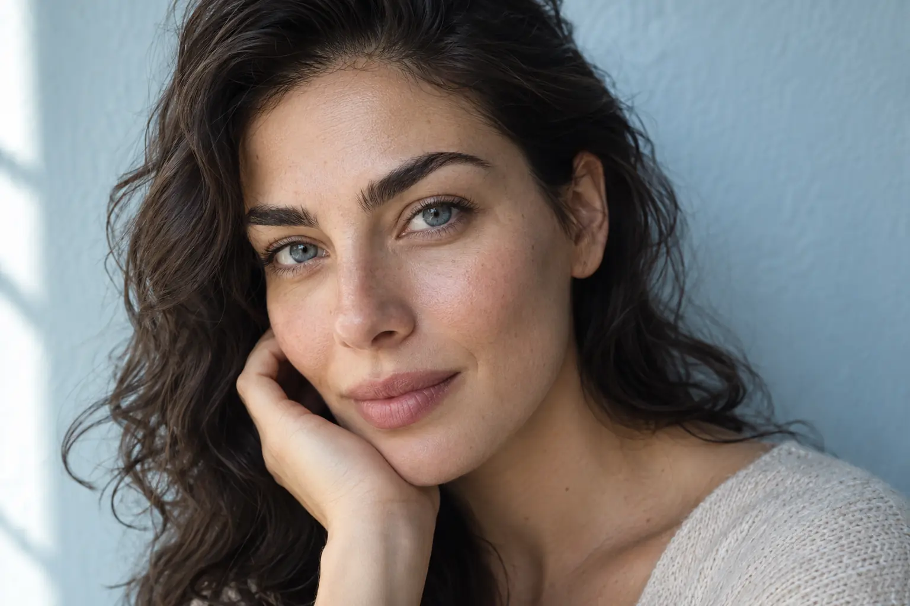

Antakių priežiūros gidas: korekcija, dažymas ir laminavimas
Autorius: Madbeauty redakcija · Numatyta 2026 m. spalio 29 d. 10:00 (Lietuvos laiku)
Likusi patikra prieš publikavimą
- Plane aiškiai numatyta patikra dar neatlikta: „Antakių specialisto terminų ir eigos review“. Reikia tikros nurodytos srities peržiūros; bendrų šaltinių skaitymas ir agento redakcinė peržiūra jos nepakeičia.
Antakių forma, spalva ir plaukelių kryptis sprendžiamos skirtingomis paslaugomis. Palyginkite korekcijos, dažymo ir laminavimo paskirtį bei eigą.

Rinkitės pagal norimą pokytį: korekcija skirta antakių formai, dažymas – spalvai, o laminavimas šiame palyginime apibūdina plaukelių krypties ir suformavimo tikslą. Tai gali būti atskiros paslaugos arba vienas paketas. Vien pavadinimo nepakanka sužinoti, kokie darbai į jį įtraukti, todėl prieš vizitą patikrinkite konkretaus pasiūlymo apimtį.
Forma ir spalva
Jei norite pakeisti kontūrą ar pašalinti dalį plaukelių, ieškokite antakių korekcijos pasiūlymo. Pavadinimas pats nepasako, ar paslaugai naudojamas pincetas, vaškas ar siūlas, todėl pasitikrinkite metodą ir ar korekcija įeina į pasirinktą paketą. Jei aktuali pati forma, bet nežinote metodo, pirmiausia apsibrėžkite, kokio kontūro siekiate, o tada palyginkite konkrečių pasiūlymų aprašymus.
Jei norite pakeisti antakių spalvinį įspūdį, ieškokite dažymo. Pasitikrinkite, ar dažymas siūlomas atskirai, ar kartu su korekcija, ir kokia spalvos parinkimo eiga numatyta. Jei jums reikia tik formos korekcijos, nepasirinkite dažymo vien dėl to, kad jis įrašytas į bendrą paketą.
Laminavimą šiame gide priskiriame plaukelių krypties ir suformavimo tikslui. Pats paslaugos pavadinimas neatskleidžia konkretaus protokolo, naudojamų priemonių ar priežiūros po vizito. Paprašykite teikėjo paaiškinti, koks pokytis numatytas būtent jo pasiūlyme ir kokių instrukcijų laikytis po procedūros.
Paslaugų deriniai ir eiga
Pasiūlymai gali skirtis ne tik pavadinimu, bet ir darbų deriniu. Pavyzdžiui, 2026 m. spalio 9 d. peržiūrėtame vieno teikėjo meniu korekcija buvo pateikta atskirai nuo dažymo, o laminavimo pasiūlymas apėmė ir korekciją, ir dažymą. Kitame teikėjo meniu buvo nurodyti laminavimo variantai su dažymu ir be jo. Tai atskirų teikėjų pavyzdžiai, o ne bendras paslaugų standartas ar Madbeauty teikėjų pasiūlos patvirtinimas.
Palygindami pasiūlymus, atskirkite tikslą nuo paketo sudėties: kokia užduotis sprendžiama, kokie darbai įtraukti ir kokį metodą ar priemones teikėjas numato. Trukmę ir kainą lyginkite tik tarp panašios apimties pasiūlymų. Jei pasirinkimo puslapyje nepaaiškinta, ar įeina korekcija arba dažymas, paprašykite tai patikslinti prieš užsakydami vizitą.
Antakių formos konsultacija: metodo paskirtis ir konkreti paslaugos apimtis
Formos konsultacija padeda išsiaiškinti, kokio kontūro siekiate, tačiau žodis „konsultacija“ savaime nereiškia, kad į pasiūlymą įeina plaukelių šalinimas, dažymas ar laminavimas. Patikrinkite, ar tai tik pokalbis apie formą, ar kartu atliekama korekcija; jei atliekama, išsiaiškinkite metodą ir ar įtrauktas dažymas. Taip galėsite palyginti konsultaciją su konkrečia korekcijos paslauga, o ne spręsti vien pagal pavadinimą.
Greitas pasirinkimo patikrinimas
- Svarbiausia forma? Ieškokite korekcijos ir pasitikrinkite metodą bei įtrauktus darbus.
- Svarbiausia spalva? Tikrinkite dažymo pasiūlymą ir ar į jį įeina korekcija.
- Svarbiausia plaukelių kryptis? Išsiaiškinkite, ką konkrečiai reiškia teikėjo siūlomas laminavimas ir kokias instrukcijas jis pateikia.
- Norite kelių pokyčių? Rinkitės tik tokį derinį, kurio sudėtis aiškiai nurodyta.
Pavyzdžiui, jei norite tik paryškinti kontūrą, bet nekeisti spalvos, ieškokite korekcijos be dažymo ir patikrinkite, kokiu metodu ji atliekama. Jei norite ir spalvos, lyginkite pasiūlymus, kuriuose aiškiai nurodyti abu darbai. Tiksli eiga, kaina ir tinkamumas priklauso nuo konkretaus teikėjo pasiūlymo, todėl jų nereikėtų numanyti iš bendro paslaugos pavadinimo.
Palyginkite procedūrų aprašus kataloge: Antakiai. Konkrečią darbų apimtį, kainą ir prieinamumą tikrinkite prie realaus teikėjo pasiūlymo.
Planuojamos vidinės nuorodos
Šaltiniai peržiūrai
- Laminuota Brows&Lashes · komponentai — 2026-10-09 Laminuota: blakstienų laminavimas – 50 min., 30 Eur; dažymas – 20 min., 10 Eur. Antakių korekcija – 30 min., 10 Eur; su dažymu – 40 min., 17 Eur; laminavimas su dažymu ir korekcija – 60 min., 25 Eur. Kojų depiliacija vašku: blauzdos – 30 min., 25 Eur; šlaunys – 30 min., 30 Eur; visos kojos – 60 min., 40 Eur. Konkretaus meniu pavyzdžiai, ne Lietuvos vidurkis.
- Leila · laminavimo ir priauginimo variantai — 2026-10-09 Leila: blakstienų laminavimas su „botox“ ir dažymu – 70 min., 40 Eur; naujas classic/nude LED/UV priauginimas – 120 min., 45 Eur; korekcija – 95 min., 35 Eur. Antakių laminavimas su korekcija be dažymo – 50 min., 32 Eur; su dažymu – 55 min., 35 Eur. Antakių ir blakstienų pasiūlymai atskiri. Meniu žyma „botox“ nepatvirtina medicininės injekcijos, LED/UV – saugumo.
- MILONA · antakiai ir blakstienos Kaune — 2026-10-09 meniu: antakių korekcija+dažymas 40 min/20 EUR, su blakstienų dažymu 50 min/26 EUR. Blakstienų/antakių laminavimo ir priauginimo deriniai rezervuoja kitą laiką. Vieno teikėjo pavyzdys, ne ekspertinė peržiūra ar vidurkis.